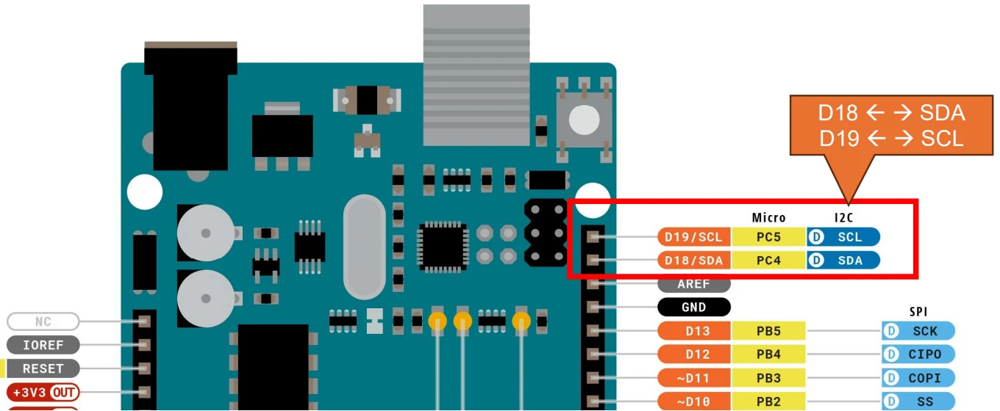
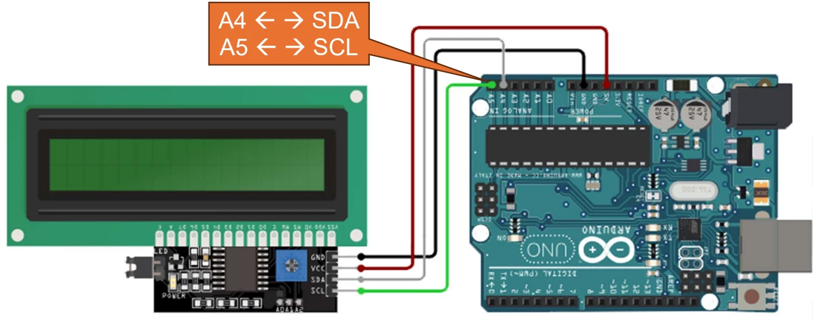
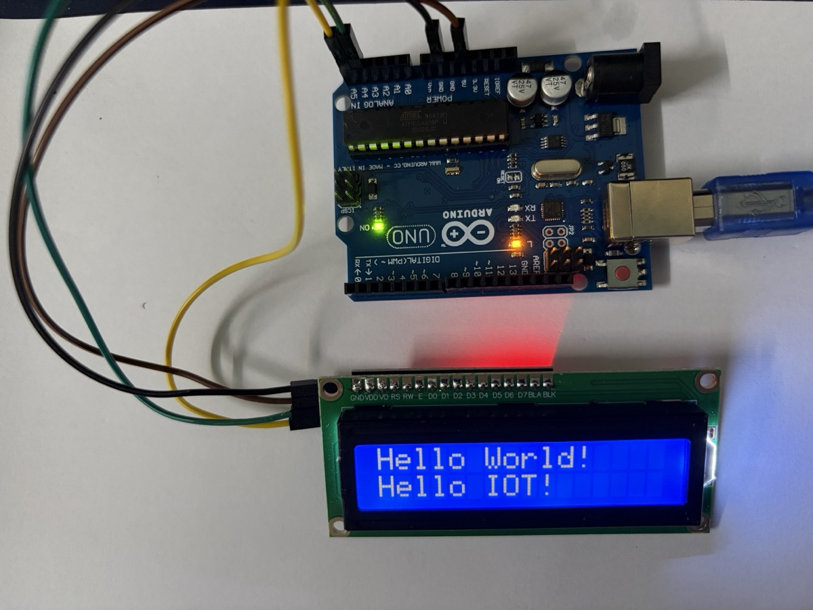

Màn hình LCD 1602 + I²C
Màn hình LCD 1602 + I²C
Cách nối màn hình LCD 16×2 có gắn module I²C vào Arduino Uno và hiển thị chữ bằng thư viện
LiquidCrystal_I2C.
LCD 1602 là gì
LCD 1602 là màn hình tinh thể lỏng hiển thị 2 dòng × 16 ký tự, dùng chip điều khiển HD44780 (hoặc tương thích). Mỗi ký tự là một ô 5×8 điểm. Màn có đèn nền (thường xanh lá hoặc xanh dương) và hiển thị được chữ, số, ký hiệu ASCII cùng tối đa 8 ký tự tự định nghĩa.
LCD gốc có 16 chân: VSS, VDD, V0 (độ tương phản), RS, RW, E, D0–D7 (8 chân dữ liệu), A/K (đèn nền). Nối trực tiếp vào Arduino tốn ít nhất 6 chân digital (chế độ 4 bit: RS, E, D4–D7) cộng một biến trở chỉnh tương phản — chiếm gần hết chân của Uno.
Module I²C (PCF8574)
Để tiết kiệm chân, LCD thường được hàn sẵn một module chuyển đổi I²C ở mặt sau. Module dùng chip PCF8574 (bộ mở rộng 8 chân I/O qua I²C): Arduino gửi lệnh qua 2 dây I²C, chip PCF8574 tự xuất ra các chân RS, E, D4–D7 và đèn nền của LCD.
Bảng 16 chân gốc, ảnh thật của LCD trong kit và các chi tiết trên module (biến trở tương phản, jumper LED, pad địa chỉ A0–A2) xem ở note linh kiện.
Địa chỉ I²C mặc định thường là 0x27 (chip PCF8574) hoặc 0x3F (chip PCF8574A). Nếu không chắc, chạy sketch quét I²C ở dưới để tìm.
I²C hoạt động thế nào
I²C (Inter-Integrated Circuit) là bus nối tiếp 2 dây, nhiều thiết bị dùng chung:
- SDA (Serial Data) — dùng để gửi và nhận dữ liệu, truyền hai chiều trên cùng một dây.
- SCL (Serial Clock) — dùng để đồng bộ hoá (điều phối thời gian) cho việc truyền dữ liệu. Thiết bị chủ (master, ở đây là Arduino) phát xung nhịp; mỗi xung trên SCL đánh dấu thời điểm đọc một bit trên SDA. Slide bài giảng gọi tắt là Control, tên chuẩn là Clock.
Mỗi thiết bị tớ (slave) có một địa chỉ 7 bit riêng; master gọi đúng địa chỉ thì thiết bị đó mới trả lời. Nhờ vậy có thể treo LCD, cảm biến, RTC… lên cùng 2 dây SDA/SCL. Hai đường này cần điện trở kéo lên (pull-up) — module LCD I²C thường có sẵn.
Trên Arduino Uno, I²C nằm cố định ở chân A4 = SDA và A5 = SCL — tương ứng chân PC4/PC5 của chip ATmega328P. Bản R3 nối thêm hai chân này ra đầu header digital, ngay sau AREF, in nhãn SDA/SCL (sơ đồ pinout ghi là D18/SDA và D19/SCL, vì A4/A5 dùng như chân digital thì có số 18/19). Hai cặp chân này thông nhau bên trong board, nối vào cặp nào cũng được — nhưng chỉ là một bus, không phải hai.

Board khác dùng chân khác: Mega là 20/21, ESP32 mặc định GPIO 21/22.
Sơ đồ kết nối

| Chân module I²C | Chân Arduino Uno | Màu dây trong hình |
|---|---|---|
GND |
GND |
đen |
VCC |
5V |
đỏ |
SDA |
A4 |
xám |
SCL |
A5 |
xanh lá |
Chỉ 4 dây, trong đó 2 dây là nguồn. Các chân digital D0–D13 vẫn còn trống để dùng cho LED, nút nhấn, cảm biến.
Lưu ý: khi đã dùng I²C thì A4/A5 không dùng được làm chân analog nữa.
Cài thư viện
Mở Library Manager trong Arduino IDE: Tools → Manage Libraries… (Ctrl+Shift+I), gõ tên vào ô tìm kiếm rồi bấm Install.
| Header | Tìm trong Library Manager | Ghi chú |
|---|---|---|
Wire.h |
— | Thư viện I²C, có sẵn trong Arduino IDE |
LiquidCrystal_I2C.h |
liquid i2c → LiquidCrystal I2C by Frank de Brabander |
Cũ nhưng ổn định, phổ biến nhất; code trong note này dùng thư viện này |
LCDI2C_Multilingual.h |
liquid i2c → LiquidCrystal I2C Multilingual by Loc P. |
In chuỗi UTF-8 có dấu — dùng khi cần tiếng Việt |
LCD-I2C.h |
lcd-i2c → LCD-I2C by Frank Häfele |
Thư viện mới, API gọn |
Chỉ cần cài một thư viện LCD (thường là LiquidCrystal_I2C); Wire.h luôn đi kèm vì mọi thư viện LCD I²C đều dựa trên nó.
Tiếng Việt có dấu. ROM ký tự của chip HD44780 chỉ có ASCII (và một ít ký tự Nhật), không có chữ có dấu. LCDI2C_Multilingual vẽ các chữ có dấu bằng ký tự tự định nghĩa (createChar) — mà LCD chỉ có 8 ô ký tự tự định nghĩa, nên mỗi lúc màn chỉ hiện được tối đa 8 chữ có dấu khác nhau. Câu ngắn thì ổn, câu dài nhiều dấu sẽ bị sai ký tự.
#include <LCDI2C_Multilingual.h>
LCDI2C_Vietnamese lcd(0x27, 16, 2);
void setup() {
lcd.init();
lcd.backlight();
lcd.print("Xin chào!");
}
void loop() {}Trên Tinkercad, linh kiện là LCD 16 x 2 (I2C); Tinkercad có sẵn thư viện Adafruit_LiquidCrystal thay vì LiquidCrystal_I2C (xem đoạn code riêng bên dưới).
Code
Quét địa chỉ I²C
Chạy sketch này trước nếu LCD không hiện chữ, mở Serial Monitor (9600 baud) để xem địa chỉ:
#include <Wire.h>
void setup() {
Wire.begin();
Serial.begin(9600);
Serial.println("Dang quet I2C...");
for (byte addr = 1; addr < 127; addr++) {
Wire.beginTransmission(addr);
if (Wire.endTransmission() == 0) { // 0 = thiết bị có trả lời (ACK)
Serial.print("Tim thay thiet bi o dia chi 0x");
Serial.println(addr, HEX);
}
}
}
void loop() {}Hiển thị chữ
#include <Wire.h>
#include <LiquidCrystal_I2C.h>
// địa chỉ 0x27, màn 16 cột × 2 dòng
LiquidCrystal_I2C lcd(0x27, 16, 2);
void setup() {
lcd.init(); // khởi tạo LCD
lcd.backlight(); // bật đèn nền
lcd.setCursor(0, 0); // cột 0, dòng 0
lcd.print("Hello, IoT!");
lcd.setCursor(0, 1); // cột 0, dòng 1
lcd.print("LCD 1602 + I2C");
}
void loop() {}Hiển thị giá trị thay đổi
Ví dụ đếm số giây từ lúc khởi động — mẫu chung để hiển thị dữ liệu cảm biến:
#include <Wire.h>
#include <LiquidCrystal_I2C.h>
LiquidCrystal_I2C lcd(0x27, 16, 2);
void setup() {
lcd.init();
lcd.backlight();
lcd.print("Thoi gian:");
}
void loop() {
lcd.setCursor(0, 1);
lcd.print(millis() / 1000);
lcd.print(" s "); // dấu cách để xoá ký tự thừa khi số ngắn lại
delay(200);
}Không gọi lcd.clear() trong loop(): lệnh này chậm (~2 ms) và làm màn nhấp nháy. Thay vào đó, ghi đè lên vị trí cũ và in thêm khoảng trắng để xoá phần dư.
Bản cho Tinkercad
#include <Adafruit_LiquidCrystal.h>
Adafruit_LiquidCrystal lcd(0); // 0 = địa chỉ I2C 0x20 trong Tinkercad
void setup() {
lcd.begin(16, 2);
lcd.setBacklight(1);
lcd.print("Hello, IoT!");
}
void loop() {}Ảnh thực tế

Mạch lắp thật dùng 4 dây đực – cái tách từ bộ cáp dẹt. Đầu cái chụp vào header 4 chân của module I²C, đầu đực cắm thẳng vào header Arduino, không cần breadboard:
| Chân module I²C | Chân Arduino Uno | Màu dây trong ảnh |
|---|---|---|
GND |
GND |
đen |
VCC |
5V |
nâu |
SDA |
A4 |
xanh lá |
SCL |
A5 |
vàng |
Màu dây không giống trong hình sơ đồ. Đó chỉ là màu có sẵn trong bộ cáp; điều quan trọng là thứ tự chân.
Quá trình chạy thật đi qua các bước sau:
- Serial Monitor báo
Not connected. Select a board and a port. IDE chưa chọn board và cổng. Chọn Arduino UNO và cổng/dev/cu.usbmodem…(macOS) là được. - Quét I²C ra
0x27. Ba padA0–A2để trống nên dùng địa chỉ mặc định. Đầu Serial Monitor in một chuỗi ký tự rácDDDD…do board reset khi mở cổng, không phải lỗi. DòngDang quet I2C...in hai lần cũng là vì board reset hai lần. - Upload code hiển thị → đèn nền xanh sáng nhưng không có chữ. Nguyên nhân là chưa chỉnh tương phản. Vặn biến trở xanh ở mặt sau module (loại một vòng, chỉ xoay khoảng 3/4 vòng). Chữ hiện ra trong một khoảng vặn rất hẹp, nên phải vặn từng chút một. Mạch chỉ chạy 5 V từ USB nên chạm vào không bị giật, chỉ cần tránh để tua vít quẹt chập các chân linh kiện.
Các hàm hay dùng
| Hàm | Ý nghĩa |
|---|---|
lcd.init() |
Khởi tạo LCD (gọi một lần trong setup()) |
lcd.backlight() / lcd.noBacklight() |
Bật / tắt đèn nền |
lcd.setCursor(col, row) |
Đặt con trỏ; cột 0–15, dòng 0–1 |
lcd.print(x) |
In chuỗi hoặc số tại vị trí con trỏ |
lcd.clear() |
Xoá màn, đưa con trỏ về (0, 0) |
lcd.scrollDisplayLeft() / Right() |
Dịch toàn bộ nội dung sang trái/phải một ô |
lcd.createChar(n, bytes) |
Định nghĩa ký tự riêng thứ n (0–7), in bằng lcd.write(n) |
Lỗi hay gặp
| Hiện tượng | Nguyên nhân / cách xử lý |
|---|---|
| Đèn nền sáng nhưng không có chữ, hoặc dòng 1 toàn ô vuông đen | Chưa chỉnh tương phản — xoay biến trở xanh trên module đến khi thấy chữ. Đây là lỗi phổ biến nhất |
| Đèn nền sáng, ô vuông đã chỉnh vẫn không hiện chữ | Sai địa chỉ I²C — chạy sketch quét, thử 0x3F thay vì 0x27 |
| Không có đèn nền | Thiếu jumper LED trên module, hoặc chưa gọi lcd.backlight() |
| Quét I²C không thấy thiết bị nào | Đảo nhầm SDA/SCL, lỏng dây, hoặc chưa nối GND chung |
| Chữ thừa ký tự cũ ở cuối dòng | Chuỗi mới ngắn hơn chuỗi cũ — in thêm khoảng trắng để xoá |
Lỗi biên dịch LiquidCrystal_I2C.h: No such file |
Chưa cài thư viện |
Serial Monitor: Not connected. Select a board and a port |
Chưa chọn board/cổng — chọn Arduino UNO và cổng usbmodem/usbserial. Board clone chip CH340 có thể cần cài driver |
Serial Monitor in ký tự rác (DDDD…) trước dòng đầu tiên |
Nhiễu lúc board reset khi mở cổng — bỏ qua được. Kiểm tra baud trùng Serial.begin(9600) |